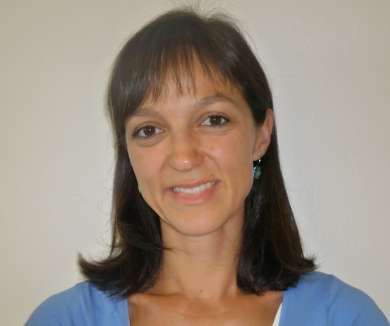
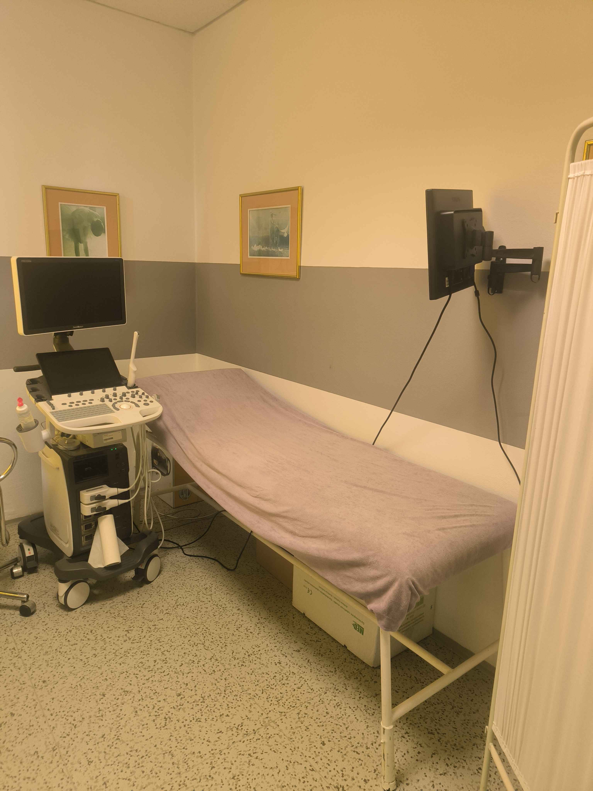
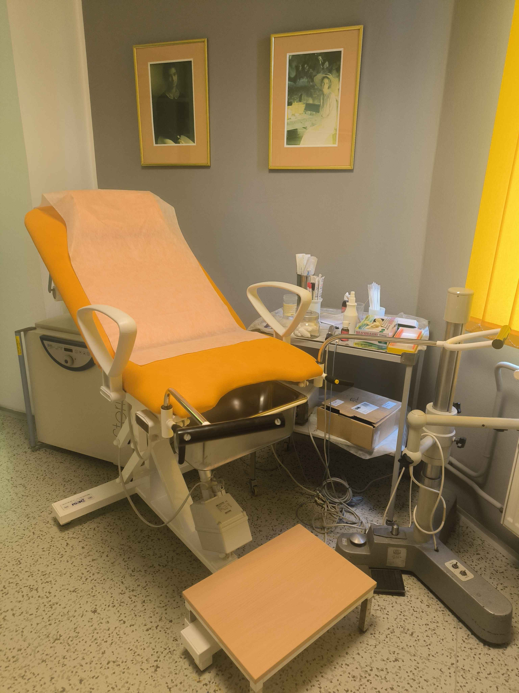
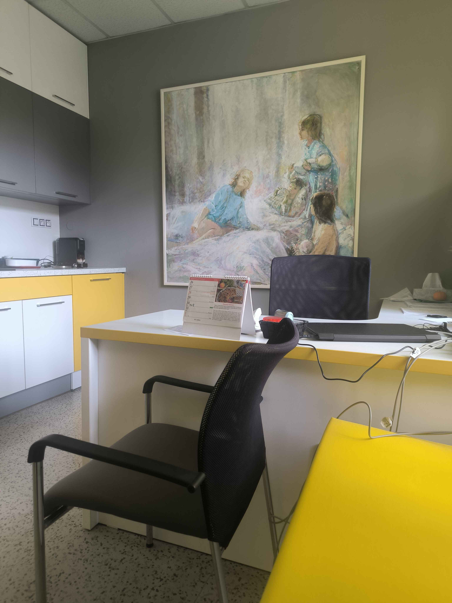
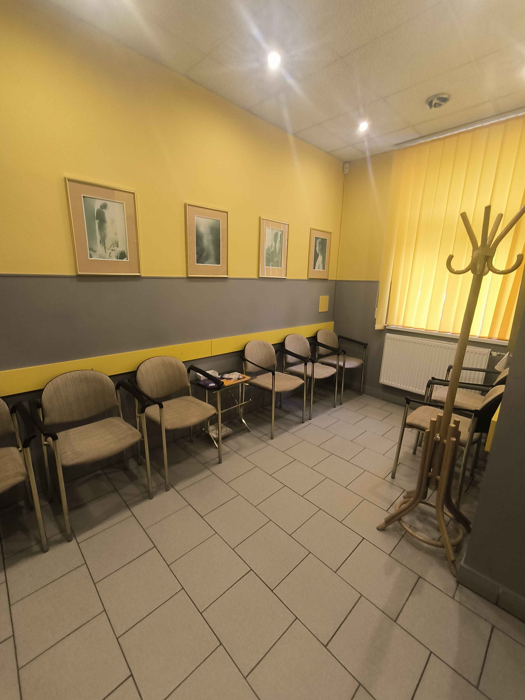

Gynekologie Semily - Jana Žižky
MUDr. Jiří Hassa, MUDr. Veronika Nečaská
Vítejte na stránkách naší gynekologicko-porodnické ambulance.
Nabízíme komplexní péči pro pojištěné pacientky i pro samoplátce.
Lékaři
MUDr. Jiří Hassa
gynekolog-porodník
atestace II. stupně v roce 1990

MUDr. Veronika Nečaská
gynekolog-porodník
evropská atestace 2011
Ordinační hodiny
| Pondělí | 7:00 - 12:00 | --- |
| (MUDr. Jiří Hassa, bez objednání) | ||
| Úterý | 7:00 - 12:00 | 16:00 - 18:00 |
| (MUDr. Jiří Hassa, pouze objednané pacientky a konzultace) | ||
| Středa | 7:00 - 15:30 | --- |
| (MUDr. Jiří Hassa, bez objednání) | ||
| Čtvrtek | 7:00 - 12:00 | --- |
| (MUDr. Jiří Hassa, těhotenská poradna) | ||
| Pátek | 7:00 - 12:00 | 16:00 - 18:00 |
| (MUDr. Jiří Hassa, bez objednání) (MUDr. Veronika Nečaská, pouze objednané pacientky a konzultace) | ||
Kontakt
Jana Žižky 268
Tel: +420 481 624 565
Tel: +420 608 814 251
Email: info@gynekologienakosiku.cz
Fotogalerie




Služby
Komplexní gynekologické péče
- preventivní prohlídky - kolposkopie, cytologie z děložních čípků, palpační vyšetření, v indikovaných případech ultrazvukové vyšetření
- očkování proti HPV virům způsobujícím rakovinu děložního čípku
- antikoncepční poradna - včetně zavádění nitroděložních tělísek
- klimakterická poradna
- poradna pro inkontinenci
- diagnostika a léčba neplodnosti ve spolupráci s IVF centry Iscare, Pronatal, Gennet
- druhý názor - konzultace a vyšetření
- indikační vyšetření před gynekologickými operacemi a pooperační péče
- diagnostika a léčba gynekologických zánětů
- odběry kultivací, stěry na chlamydie, mykoplazmata, STI onemocnění
- vyšetření prsů - včetně ultrazvukového vyšetření
- genetické vyšetření rizika rakoviny prsu a vaječníků, rizika trombofilních stavů ve spolupráci s GHC Praha
Komplexní porodnická péče
- kompletní prenatální poradny
- ultrazvuková vyšetření včetně ultrazvuku
- poporodní péče
- péče o riziková těhotenství ve spolupráci s porodnicemi Jilemnice, Jičín a Jablonec nad Nisou
- poporodní péče
Ceník
Ceník výkonů nehrazených zdravotní pojišťovnou
| Vakcína GARDASIL 9 včetně aplikace (cena za 1 vakcínu ze 3) | 3100 Kč |
| HPV testace nehrazená pojišťovnou | 800 Kč |
| CIN tec stěr čípku | 1000 Kč |
| Hormnonální IUD Mirena včetně kontrol | 6000 Kč |
| Hormnonální IUD Levosert včetně kontrol | 5000 Kč |
| Hormnonální IUD Jaydess včetně kontrol | 5300 Kč |
| Hormnonální IUD Kyleena včetně kontrol | 5800 Kč |
| Vyšetření panelu STD (ureaplasma, mycoplasma, chlamydie, neisseria gonorrhoeae) | 1700 Kč |
| odběry z děložního čípku za použití jednorázových plastových gynokologických zrcadel | 50 Kč |
| Zjištění těhotenství a sepsání žádosti o umělé přerušení těhotenství včetně laboratorních odběrů | 1000 Kč |